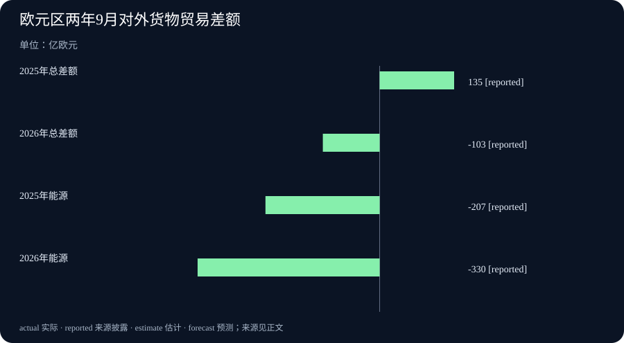

Daily Intelligence · 2026-11-14
信息边界 研究截止于北京时间 2026 年 11 月 14 日 07:05:27，优先窗口从 11 月 13 日 07:05:27 起。llama.cpp 团队公告和欧盟统计局两份原文均标注 11 月 13 日，首次公开小时未披露，原页时区未知，按日期采用。AgentSSL 列入 arXiv 11 月 13 日的新论文清单，按该站当周公开安排推算，对应北京时间 13 日 09:00 左右的批次。货物贸易统计的是 9 月，经济产出和就业统计的是 7 至 9 月。 arXiv 公开安排
Today's Thesis
llama.cpp 为开发者标明以后哪些升级可能需要改代码。AgentSSL 的研究则提醒团队，找到一份表现好的程序之后，还需要能在实际使用前选出它。欧元区的新报告也给出了两种不同的检查办法。货物贸易要拆开进出口和商品分项，经济产出和就业要各看自己的数据。
Executive Summary
llama.cpp 及其基础计算库发布 1.0.0，承诺今后通过版本号标出公开接口的不兼容变化。这次发布本身移除了一批旧接口，也为本地服务增加了文字转语音入口。应用维护者升级前需要查看自己用到的接口。
AgentSSL 论文用少量人工标记的样本和大量未标记的材料，让人工智能助手试写并比较不同训练程序。研究者事后用独立测试集挑选时，12 种设置中有 8 种出现优于人工设计基准的程序。若只按助手在寻找过程中能取得的评分来选，结果有时会明显变差。
欧元区 9 月对外货物贸易由上年同月顺差转为逆差，进口额同比增长快于出口额。欧盟统计局同日发布的另一份报告显示，第三季度实际国内生产总值较上季增长 0.4%，就业人数按公布精度与上季持平。
AI Daily
llama.cpp 发布 1.0，升级前能从版本号读出更多信息
开源项目 llama.cpp 让电脑或自有服务器运行人工智能模型。11 月 13 日，团队正式发布 llama.cpp 及其基础计算库 ggml 的 1.0.0 版。团队说明，今后如果改变公开的 C 语言接口并导致已有应用无法按原方式调用，会提高版本号的第一位。增加仍兼容的功能、模型支持或接口会提高第二位，修错且接口保持原状会提高第三位。已经编译好的应用能否继续与新版计算库配合，也属于团队会标明的兼容范围。 维护团队的发布说明
这次发布移除一批先前已标明将淘汰的公开接口，也给可供其他应用接入的本地服务新增文字转语音接口。使用语音功能要有受支持的模型和相应运行环境。如果一个桌面应用原来直接调用旧接口，可以先在测试机器上安装新版本，确认加载模型、运行原任务和退出时都正常，再决定是否升级。普通读者可以从这次变化看到，下载到模型文件之后，还需要相应的软件能在自己的设备上打开和运行。 1.0.0 正式版变更记录
AgentSSL 找得到好程序，怎样选中它仍是难题
康奈尔大学和霍华德·休斯医学研究所等作者公开论文，测试人工智能助手能否为图像分类任务编写训练程序。研究采用半监督学习，也就是用少量由人标好类别的图片，加上许多没有标记的图片来训练。助手取得任务说明和两类材料后，可以试写不同程序，用手上能取得的反馈来判断哪条办法值得继续试。作者用六个图像数据集，各设两种人工标记数量，形成 12 种设置。 研究原文与实验方法
作者事后根据独立测试集表现选出候选中的最好程序，再与人工设计的基准比较，12 种设置中有 8 种胜出。团队实际选程序时通常拿不到独立测试集的答案。论文对照了按当时可得评分选出的结果，发现评分有时和实际准确率对不上。在有些设置中，把一部分人工标记留给最终选择能改善结果。在评分已经有效的设置中，这样分配也可能使准确率下降。作者公开了包含 16,977 个已评估程序实例的数据集，供后续研究检查怎样选程序。 论文结果表 作者公开的评估数据集
Business Daily
欧元区 9 月货物进口额增得更快
欧盟统计局 11 月 13 日发布欧元区 9 月对外货物贸易初值。出口额为 2,727 亿欧元，比去年同月增 6.0%。进口额为 2,830 亿欧元，同比增 16.1%。出口额减去进口额为负，就是贸易逆差。9 月逆差为 103 亿欧元，上年同月是 135 亿欧元顺差。这里计算的是欧元区与区外之间的货物贸易金额，服务贸易和欧元区内部交易另计。 欧盟统计局货物贸易原文与主表
与去年同月相比，能源贸易逆差由 207 亿欧元扩大到 330 亿欧元，机械和车辆顺差由 100 亿缩至 30 亿欧元。欧盟统计局把能源逆差扩大列为总差额恶化的主要因素。进口金额也会随价格和购买数量一起变动。若要判断企业或家庭实际多用了多少能源，还需看进口数量、价格和库存。 欧盟统计局商品分项说明
把观察期拉长到今年 1 至 9 月，欧元区对外货物贸易初步合计为逆差 365 亿欧元，上年同期为顺差 1,022 亿欧元。这个比较用来查看差额变化是否只集中在 9 月。报告也提醒，成员国补报数据后，统计局可能修订数字。单月与累计值可以一起看，但累计金额已经包含 9 月。 欧盟统计局货物贸易主表与修订说明
Macro Observation
欧元区第三季度产出增加，就业人数按公布精度持平
欧盟统计局 11 月 13 日公布第三季度实际国内生产总值（GDP）与就业快估。实际 GDP 衡量剔除价格变动后的生产规模。经季节调整后，欧元区 7 至 9 月的实际 GDP 较上一季度增 0.4%，就业人数与上一季度持平。季节调整减弱每年反复出现的季节变化，方便比较相邻季度。两个指标合起来说明，本次公布的产出增加了，统计表里的就业人数环比变化为 0.0%。 欧盟统计局 GDP 与就业快估
就业人数是有工作的人数，工作时长和岗位分布还要看更细资料。就业总数持平时，也可能有部分行业增加、其他行业减少。上一期报道的是英国第三季度初值。这份欧元区报告新增了另一个地区的产出和就业对照。货物贸易则按未季调的 9 月金额与去年同月比较。把这三种统计放在一起时，先看清地区、时期和单位，才能说出它们各自支持的判断。
Signal Dashboard
| 主线 | 已有证据 | 接下来核对什么 |
|---|---|---|
| llama.cpp | 1.0 正式发布，公布今后的版本编号规则 | 应用是否仍依赖已移除接口，目标设备能否运行 |
| AgentSSL | 多种设置中找到优于人工基准的程序 | 只用部署前能获得的反馈时能否选中它 |
| 欧元区货物贸易 | 9 月逆差 103 亿欧元，能源逆差同比扩大 | 能源进口的价格、数量和库存 |
| 欧元区经济与就业 | 第三季度实际 GDP 环比增 0.4%，就业人数按公布精度持平 | 以后披露的行业分布和工作时长 |
Deep Insight
什么信息可以在作决定之前拿到
软件升级要在交付前作决定。llama.cpp 的版本规则让团队先判断需要多深的检查。只修改错误的版本，与移除已有公开接口的版本，适合的测试范围不同。假设一家机构用本地模型整理档案，它可以列出实际支持的设备和软件，给每套设备准备一份已知结果的档案。升级后检查应用能否读文件、模型能否返回预期内容、结果能否由工作人员复核。发现有设备失败时，版本编号可以帮助缩小排查范围，具体兼容情况还要靠这些设备上的结果。 维护团队的版本规则
AgentSSL 提出了另一个时间顺序问题。研究者可以等所有程序跑完，再根据独立测试结果回看当时能找到多好的方案。决定真正采用哪一个程序时，最有价值的依据往往来自尚未用来训练的少量可靠样本。假设一个团队要按内容把照片送进不同档案夹，大部分照片还没有标好。把所有已确认照片都交给程序学习，可能留下很少能用于挑选程序的材料。留下一些能代表常见类型和容易混淆类型的样本，可以在上线前检验候选程序。论文结果显示，这种安排是否划算，取决于已有评分和实际正确率是否一致。 论文的程序筛选实验
经营数据也有作决定的时点。欧元区能源贸易差额扩大，能说明当月区外能源买卖的金额差距比一年前大。若企业用这个数字判断仓库要准备多少原料，就还需要数量、价格和本地库存。相邻月份是否改善要另看经季节调整的数字。报告显示，9 月未经调整的总货物逆差比 8 月小，经季节调整的逆差则由 78 亿欧元扩大到 87 亿欧元。两种比较都可复查，回答的问题各有范围。 欧盟统计局贸易初值及季调附表
看产出和就业时也要保存原始比较条件。如果统计局以后修订了本季就业人数，先确认修订涉及哪些月份或行业，再看对原判断有何影响。地区总数、行业分项和企业采购记录有不同用途。读到某项指标增长，可以先写清它是哪一份资料的结果，再选择下一项真正能帮助作决定的证据。 欧盟统计局 GDP 与就业快估
Tomorrow Watch
- 跟踪常用应用何时支持 llama.cpp 1.0，留意旧接口需要怎样迁移，以及语音功能对模型和设备的要求。
- 查阅 AgentSSL 后续复现，关注程序选择时用了多少可靠标签，以及在图像分类以外的任务上是否得到类似结果。
- 欧盟统计局定于 12 月 16 日发布下一期货物贸易报告。可继续对照能源和机械车辆分项，并保持季节调整口径一致。
- 欧元区经济和就业的后续细表发布后，核对行业分布、工作时长及初值修订。
One Chart
欧元区 2025 年和 2026 年 9 月对区外货物贸易差额，单位为亿欧元。总差额由顺差 135 亿变为逆差 103 亿。能源差额由逆差 207 亿变为逆差 330 亿。正值是顺差，负值是逆差。能源已计入总差额，图中两类数值不能相加。reported 表示欧盟统计局披露的数字。本图采用未季调金额，2026 年数据为初值。 欧盟统计局贸易初值

Quote of the Day
Perhaps the most important principle on which the economy of a manufacture depends, is the division of labour amongst the persons who perform the work.
制造业能否节省成本，或许最重要的一条原则，就是让从事生产的人分工。
Charles Babbage（查尔斯·巴贝奇），《论机器和制造业的经济》（On the Economy of Machinery and Manufactures，1832 年）第十九章《论分工》第 217 段。巴贝奇从社会中的职业分工谈起，接着分析工场为何把生产拆成需要不同技能的工序。 巴贝奇著作原文
编辑解读 分工以后，也要有人了解上一步交来了什么，以及下一步需要什么。描述每项工作时，写明怎样交接，通常比只给每个人划一个负责范围更有用。
Action Items
- 这次软件升级会动到哪里？ 列出应用实际使用的接口，先在一台常用设备上跑通原任务，再检查新增功能。
- 可以留哪些样本验证候选程序？ 在训练前留出一小组可靠样本，并记下其中覆盖的常见情况和难例。
- 逆差扩大来自哪些商品？ 对照总差额、能源和机械车辆分项，引用时保留欧元区对外货物贸易的口径。
- 上月比较用了哪套数字？ 从原表确认是否经季节调整，并用同一口径记录 8 月和 9 月差额。
- 产出增加时，工作时长怎样变？ 把季度产出与就业人数的初值一起记下，等细表披露后再加入工作时长。